- Introduction - read me!
- Frame Check
- PID Autotune
- Extruder E-steps Calibration
- First Layer
- Baseline Print
- Slicer Flow Calibration
- Stepper Motor Driver Current
- Temperature Tuning
- Retraction Tuning
- Speed & Max Flow Tuning
- Acceleration Tuning
- Linear Advance
- XYZ steps Calibration
Introduction
This page serves as a companion for this video: 3D printer calibration revolutionised - Step by step to better print quality
It has received a major update to bring it up to V2 which is explained in this video: 3D printer calibration site V2 - Still free and better than ever!
It aims to make calibrating your 3D printer as easy as possible. If you find it helps you and you would like to say thank you, here is a donation link: PayPal.me
Special thanks to my Patrons for suggesting this video, helping define the contents and testing/proofing.
Watch the videos and then work through each tab. I have created a custom gcode generator to assist in making testing towers. This used to be a laborious process and beyond the skills of many users. Other times pre-sliced gcode was used from the internet, but it is impossible to have gcode available for every printer configuration. Until now!
Warning - Read carefully!
Every attempt has been made to ensure this is safe but ultimately there always is risk in running pre-sliced gcode from the internet. Preview the gcode in your slicer or Zupfe GCode Viewer and print at your own risk.
Only print this gcode when you are present, alert and capable of stopping the printer in case of emergency.
Validation has been built into the forms to only allow sensible min and max values, however this is not foolproof.
How this site works
The gcode generated by this page is originally from Simplify3D. This website then uses Javascript to modify the contents based on user inputs. This site is not a web based slicer, therefore it is limited in some ways.
The aim for the site is to provide compatibility with the majority of 3D printers. It aims to be beginner friendly and as such where possible the interface is kept as minimal as possible. Because of this, some requests for extra functionality will not be accepted. Something that makes the experience better for 1% of users but confuses 40% of others is not worth including.
Print Settings from the calibration S3D slicer profile
A 'calibration' slicer profile in S3D is used as the basis of the gcode on this site. S3D offers multiple processes to assist with splitting the towers into segments where the print settings can vary. Apart from this, the only special functionality used is post processing scripts to delete some lines, and to modify others with simple search and replace functions.
The general characteristics of the slicer profile are as follows:
- Sliced for Marlin firmware, although in most cases will still be compatible with other firmwares.
- A build volume of 120 x 120 x 250 mm (This site can accommodate anything as small as this and anything larger)
- 1.75mm filament (However M221 S38 for 2.85 mm filament and M221 S34 for 3.0 mm filament can be applied in the custom start gcode field as compensation)
- Absolute extrusion values (M82 as opposed to relative/M83)
- 0.4mm nozzle and 0.2mm layer height, although now additional configurations are now possible
- Line width on auto, typically 120% of nozzle diameter
- Defaut feedrate of 60mm/sec. Modifiers include 60% for perimeters, 80% for solid infill, 166% travel moves, and 50% for the first layer
- Travel moves of 20 mm/sec for Z
- Flow rate of 0.90. Please see the note on the bottom of the flow tab for instructions on adapting this to your printer.
- Nozzle priming has been turned off to avoid bed clips or problems with delta printers. Use the custom start gcode feature to insert the priming sequence from your slicer profile.
- A single layer skirt (except on the acceleration test)
- 100% part cooling fan for bridging
- First layer height of 100%, width 120%
- No minimum layer time, auto part cooling, etc
- 4 top layers, 3 bottom layers, 3 perimeters
- 20% rectilinear infill
The default start gcode is as follows (this can be completely replaced by ticking the appropriate option on each form):
; G-Code originally generated by Simplify3D(R) Version 4.1.2 ; This calibration test gcode modified by the Teaching Tech Calibration website: https://teachingtechyt.github.io/calibration.html ;M80 ; power supply on G90 M82 M106 S0 ;bed0a ;bed0b ;temp0a G28 ; home all axes ;G29 ; probe ABL ;M420 S1 ; restore ABL mesh ;temp0b ;customstart G0 Z3; fix for delta printers that home at max`;
The default end gcode is as follows (this can be completely replaced by ticking the approprpriate option on each form):
G28 X0 ; home X axis M106 S0 ; turn off cooling fan M104 S0 ; turn off extruder M140 S0 ; turn off bed M84 ; disable motors ;customend
The information above is a summary, but if you wish to see the exact settings, the Simplify3D fff profile is available for download here.
Please note that non Simplify users can simply open this file in a text editor and everything will be listed.
You may notice settings related to temperatures, retraction, Z hop, part cooling, etc have set values, but these are altered by post processing scripts and this site to ultimately be set using the user's inputs. Several parameters work like this, please don't be fooled by what is in the slicing profile. Opening the final gcode file in a text editor and searching for 'custom' will show if the user's inputs have been successfully adopted.
Post processing scripts in Simplify3D
Unfortunately, there is no official reference for this provided by S3D. Instead, I have relied on this forum post.
The scripts in my profile perform the following tasks:
- Strip out all comments apart from new processes and layers.
- Strip out all start and end gcode. This gcode is instead provided by the site.
- Find specific lines relating to retraction and zhop, replacing them with comments this site expects to find and modify further.
{REPLACE "; process" ";process"}
{REPLACE "; layer" ";layer"}
{STRIP "; "}
{STRIP "M82"}
{STRIP "G90"}
{STRIP "M106 S0"}
{STRIP "M104"}
{STRIP "M109"}
{STRIP "M140"}
{STRIP "M190"}
{STRIP ";layer end"}
{REPLACE "G1 E-5.0000 F2400\n" ";retract1\n"}
{REPLACE "G1 E0.0000 F2400\n" ";unretract1\n"}
{REPLACE "G1 E-5.5000 F2460\n" ";retract2\n"}
{REPLACE "G1 E0.0000 F2460\n" ";unretract2\n"}
{REPLACE "G1 E-6.0000 F2520\n" ";retract3\n"}
{REPLACE "G1 E0.0000 F2520\n" ";unretract3\n"}
{REPLACE "G1 E-6.5000 F2580\n" ";retract4\n"}
{REPLACE "G1 E0.0000 F2580\n" ";unretract4\n"}
{REPLACE "G1 E-7.0000 F2640\n" ";retract5\n"}
{REPLACE "G1 E0.0000 F2640\n" ";unretract5\n"}
{REPLACE "G1 E-7.5000 F2700\n" ";retract6\n"}
{REPLACE "G1 E0.0000 F2700\n" ";unretract6\n"}
Changes made per test to the base slicing profile
The information below is mainly for my reference. However, if you wish to duplicate the tests yourself out of interest or perhaps to develop a new test for the site, then the steps must be followed exactly, including replicating the process names.
First layer test: No changes, although it should be noted that a single square is included which is then duplicated and positioned by this site. Non uniform scaling of the source STL needs to occur to suit certain nozzle/layer combinations. The square should be 25 x 25 mm with it's height scaled to match the target layer height.
Baseline test: No changes
Retraction test:
- Z seam alignment set to 50, 50 mm
- 'Process-1' from 0mm
- 'Process-2' from 1mm - 0% infill
- 'Process-3' from 5mm - 5.5 mm retraction at 41 mm/sec - 0% infill
- 'Process-4' from 10mm - 6.0 mm retraction at 42 mm/sec - 0% infill
- 'Process-5' from 15mm - 6.5 mm retraction at 43 mm/sec - 0% infill
- 'Process-6' from 20mm - 7.0 mm retraction at 44 mm/sec - 0% infill
- 'Process-7' from 25mm - 7.5 mm retraction at 45 mm/sec - 0% infill
Temperature test:
- 'Process-1' from 0mm
- 'Process-2' from 9mm
- 'Process-3' from 17mm
- 'Process-4' from 25mm
- 'Process-5' from 33mm
Acceleration test:
- 5 perimeter wide brim instead of a skirt
- 0% infill
- 0 top and bottom layers
- 2 perimeters
- Z seam alignment set to 0, 100 mm
- 'Process-1' from 0mm
- 'Process-2' from 5mm
- 'Process-3' from 10mm
- 'Process-4' from 15mm
- 'Process-5' from 20mm
Speed tower test
- Single outline corkscrew printing mode
- 0 top layers
- 1 bottom layer
- 100% outline underspeed
- 'Process-1' from 0mm
- 'Process-2' from 10mm
- 'Process-3' from 20mm
- 'Process-4' from 30mm
- 'Process-5' from 40mm
Frame Check
Aim:
To ensure there are no underlying problems with the frame or mechanical components of the 3D printer.
When required:
Any time the frame or mechanical components have been disassembled or replaced.
Tools:
Basic spanners, Allen keys, etc.
It would be easy to use the techniques elsewhere on this page to try and fix problems that were actually caused by a problem with the physical components, so we will eliminate this possibility first.
Many of these procedures are covered in this video: Complete beginner's guide to 3D printing - Assembly, tour, slicing, levelling and first prints
Loose nuts and bolts
Move around the machine and check all fasteners. Crucial ones include those on the print head gantry such as those that hold the hot end on.
V-roller tension
If your printer has a motion system based on V-roller wheels riding on V-slot extrusions, check they are properly tensioned. Each location will have one eccentric nut. This can be twisted to either add or remove tension on the wheels.
If the wheels are too loose: Wobble will be present in the assembly, which will show in the print as surface artefacts.
If the wheels are too tight: The assembly will be too tense, which will wear the V-rollers prematurely.
In some rare instances poorly adjusted rollers may affect first layer accuracy across the bed.
Lubrication
Lubrication is an important maintenance task to perform regularly. Components that are not adequately lubricated may bind and affect print quality. Use SuperLube Synthetic Grease. Lubrication needs to be performed regularly on any hardened rods, linear rails and lead screws.
Bed Levelling
Probably the most essential part of setting up your 3D printer. Most new users will trip up on this. If you have ABL, this includes making sure your Z offset has been set and saved. Dialing in the first layer has now been moved to its own tab.
PTFE Tube
If your printer has PTFE tube, such as a bowden tube setup for the extruder/hot end, it is essential to make the tube is fully inserted and seated in the coupler. Also ensure the coupler is properly tightened. You may wish to use a small retaining clip on the coupler to prevent the tube working loose: Creality PTFE clip by morfidesign.
Nozzle
It is worth heating up the nozzle and pushing some filament through to see if it is exiting the nozzle properly. If the diameter is inconsistent or the extruded plastic shoots to one side, it may indicate a partial blockage in the nozzle that will be a pain in the future. It is also worth checking if the nozzle is properly tightened. Only do this when it is hot, or you may break it.
Belts
Ensure all belts are properly aligned and tensioned sufficiently. Also check the grub screws are tight on the pulleys that connect the belts to the stepper motors.
Fans
Check all fans are spinning freely. This includes but is not limited to: mainboard cooling fan, heat sink fan, part cooling fan, PSU fan. It can be hard to diagose if a fan is performing at less than full capacity. It may be easier to simply replace than repair if you suspect a fan is failing.
Another suitable video for seeing some of these procedures is here:
PID Autotune
Aim:
To ensure the heating of the 3D printer nozzle and bed are safe, stable and consistent.
When required:
Any time the hot end is changed, including adding/removing a silicone sock or altering part cooling fan/ducts. Any time the bed is changed, such as adding a glass/mirror plate, magnetic spring steel sheet and/or under bed insulation.
Tools:
Terminal software such as Pronterface or Octoprint.
Instructions on how to setup terminal software can be found here.
PID autotuning is quick and easy, and relates to the most potentially dangerous components of your 3D printer: the heaters. It makes sense to do it as a first step. This procedure is covered in this video: Two easy fixes for 3D printer temperature swings
In Marlin, this is a very straightforward process using M303.
It is recommended to run the tuning with conditions as close to printing as possible. This means filament loaded and the part cooling fan set to your normal speed. This can be done from the printer's interface or in a terminal, by entering the following (this example is 100% fan speed):
M106 S255
It is not essential, but you may prefer to start this process with the hot end at room temperature. To tune the hot end, enter in a terminal:
M303 E0 S200 U1
This will tune the hot end at 200 degrees. The S value can be altered to suit your most common printing temperature. The U1 means the result is stored to RAM and we can save it immediately to EEPROM by sending:
M500
For the bed, PIDTEMPBED must be enabled in the firmware, then the command is quite similar:
M303 E-1 S60 U1
The bed is selected with E-1, and the temp set to 60 degrees. Substitute as necessary for your normal printing bed temperature. Once again save to EEPROM afterwards with:
M500
It may be preferable to have the printer as close to printing conditions as possible during these tuning procedures. That means having filament loaded and the part cooling fan on for PLA temperatures. If there is no UI button available to turn on the part cooling fan, you can do it manually via gcode with M106 S255.
Special note: If your printer doesn't support saving settings in EEPROM
In this case, you need to insert M301 (hot end) or M304 (bed) into your slicer start gcode so the correct settings are loaded before each print.
After PID auto tuning, the final values for P, I and D will be listed in the terminal. Retreive them and use them as follows for the hot end:
M301 E0 P[p value] I[i value] D[d value]
This will set the PID values for the default hot end, eg. M301 E0 P34.4 I0.02 D5.7 (bogus numbers, please don't copy them).
For the bed:
M304 P[p value] I[i value] D[d value]
This will set the PID values for the bed, eg. M304 P26.0 I1.33 D20.5 (bogus numbers, please don't copy them).
First Layer
Aim:
To ensure the printer bed is both level and an appropriate distance from the nozzle. In the case of using ABL, to check if compensation is working and the Z offset is correctly set. This will result in a first layer with the correct amount of 'squish', meaning good adhesion, and greatly increasing the chances of the print being successful.
When required:
Initial setup of the printer, regular maintainence, if first layer quality diminishes, any time the frame or mechanical components have been disassembled or replaced, any change of bed surface or nozzle, a change in filament that has significantly difference bed/hot end temperatures. There is a lot that can throw the bed level off, but careful use of your printer without any hardware changes should see it remain consistent for an extended period of time.
Tools:
The gcode generator on this page. A standard sheet of office paper.
General Principles
Getting a good first layer is an essential part of 3D printing successfully and is probably the number one cause of failed prints for new users.
Firstly, the bed needs to be parallel to the plane the nozzle traverses when moving in X and Y. This is achieved by moving the corners of the bed up and down relative to each other. With manual bed levelling this is achieved by turning the levelling knobs in each corner.
Secondly, the vertical distance between the bed and the nozzle needs to be correct for the first layer to print correctly. In a manual system, this is achieved by turning the levelling knobs in unison to lift or lower each corner the same amount.
If this distance is too far, the filament will not be squished into the bed enough, potentially even printing in mid air, and the print will detach from the bed and fail.
If the nozzle is too close, there will not be enough room for the extruded filament to take the correct shape, and it will be forced to squeeze outwards. In minor cases, the extruded line will be wider than necessary and produce elephant's foot. Prints like this may be quite hard to remove from the bed.
In extreme cases, there will be no way for the filament to exit the nozzle, at best causing extruder stepper motor skipping, and even potentially even jamming the extruder/hot end.
The contents of this page are shown in detail in the following video:
Manual Levelling Procedure
There are many techniques available, but a common one is to move the nozzle to the various corners of the bed, turning the levelling knobs until a standard piece of office paper can just fit between the bed and nozzle. A 0.1mm feeler gauge can be used, but make sure it doesn't have any oil on it that will contaminate the bed surface. Typically, this procedure is done with the bed at printing temperature (essential), and the nozzle close to printing temperature - just cool enough to prevent filament oozing out (optional).
It is common to follow up with a first layer calibration print, and 'live level' the bed by continuing to adjust the knobs when the print is under way.
This process is depicted in detail in the video above, and a gcode generator is provided at the bottom of the page to generate a suitable test print.
Auto Bed Levelling and Z offset
Auto bed levelling automates the procedure to some extent. A sensor such as a BLtouch, EZABL, strain gauge or peizo transducer is used to probe the bed in a grid formation. At each location, it measures the vertical height, building up an array of stored values, called a mesh. Manual mesh bed levelling can also be used to probe such a grid, but is still a manual process and hence not considered 'automatic'. Here is a visual representation of a probed mesh, shown with the Bed level visualizer Octprint plugin:
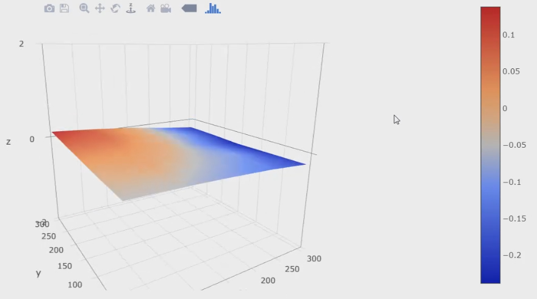During printing, the firmware will reference the mesh and compensate for an angled and/or warped bed by raising and lowering the nozzle using Z axis movement. This means the nozzle can travel up and down to match the contours of the bed, ensuring a good first layer.
If the printer's bed is perfectly flat, it is reasonable to claim ABL is not needed. Some users may still prefer it for the added convenience. In the event that the bed is warped (very common), it can be impossible to get a good first layer without ABL or manual mesh bed levelling. An example of this situation is shown in the video above.
It's worth noting that you can compensate for a warped bed in other ways, such as shimming the lower portions with a thin and flexible material. You can also use a glass/mirror plate over the top, which are typically quite flat. The downside of this is a longer time required to reach printing tempratures and additional load on the Y stepper (on an i3/'bed slinger' style printer) that may require lower print speed/acceleration.
The bed can be probed at the start of the print with a G29 command, with the resulting mesh immediately used to compensate as the initial layers are produced. Alternatively, the bed can also be probed some other time (while not printing), the mesh stored in the EEPROM and then restored with M420 S1 at the start of a print. In this case the print will start sooner, since we do not need to wait for a new mesh to be probed, although it may not be as accurate if anything has changed since probing. Either of these gcode commands should come after the G28 home command in the start gcode.
Although ABL can compensate for a crooked/non-levelled bed, it is still better to attempt to level manually first and get everything in the ballpark.
Probing the bed and building a mesh only accounts for an uneven or warped bed. Like manual levelling, we still need to set the distance between the nozzle and bed to get a good first layer. This is where the Z offset comes in, which is simply the vertical distance between where the probe triggers vs the nozzle tip. Here are some examples:
- BLtouch/EZABL/Pinda probe - The nozzle is in mid air when these probes are triggered, which will require a negative Z offset.
- Manual mesh bed levelling - The nozzle and bed will be very close when manually probing, requiring a Z offset close to zero.
- CR-6 style strain gauge - The nozzle touches the bed and flexes upwards to trigger the probe. This means the trigger point is actually higher than the nozzle tip, and requires a positive Z offset.
The following picture shows Z offset for a BLtouch. You can clearly see the vertical difference between the probing point (tip of BLtouch) and the tip of the nozzle.
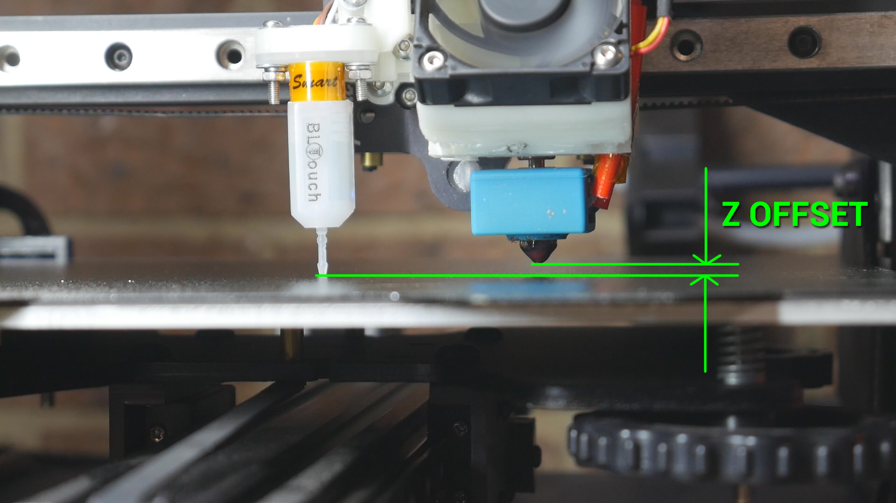If BABYSTEP_ZPROBE_OFFSET is enabled in Marlin, setting the Z offset can easily be done as the first layer goes down. Don't forget to save to EEPROM afterwards. Newer versions of Marlin also have a Z offset wizard that can be included when you compile. I have a dedicated video for this:
Another advantage of some ABL systems is that once the Z offset is set, you can interchange build surfaces of various thicknesses, with no changes needed for a successful first layer. Assuming the probe is triggered the same way on the bed surface, the Z offset is applied to this trigger point and the first layer height should be the same. On a manually levelled bed, the four corner knobs would need to be turned in unison to raise or lower the bed in accounting for thickness of the new build surface.
First layer gcode generator
The following form will create a series of five squares that you can use to live level your bed or set the Z offset. It is quick to print and features one square in the middle of the bed, with four others in the corners. You can use these to turn the levelling knobs in each corner until they are consistent, or ensure your ABL system is working if you have one in place.
This test is intentionally placed before others because it is assumed that your first layer must be reasonable for the later tests to succeed. In some cases, however, if your flow, retraction, etc is way off, it may prevent your first layer from sticking properly and you may wish to try these other tests first.

Interpreting Results:
Please use the following video as a guide to this test:
The following diagram and reference picture can be useful in determing if your first layer is too close or too far away from the nozzle. The reference image is quite large to aid clarity, you may wish to open it in a new tab to view it at maximum size.
If one side looks too close, but the other too far, adjust the levellng knobs to correct this. It is worth printing this gcode more than once after making adjustments to make sure the result is accurate and repeatable.


Baseline Print
Aim:
To establish a baseline for comparison with later tests or before modifications.
When required:
Before general calibration or before a significant modification is to be fitted.
Tools:
Gcode generator on this page.
Baseline test print generator
The form below will create a customised version of the XYZ 20mm calibration cube by iDig3Dprinting. It is fast to print and gives a good indication if there is any fundamental problem with the printer.
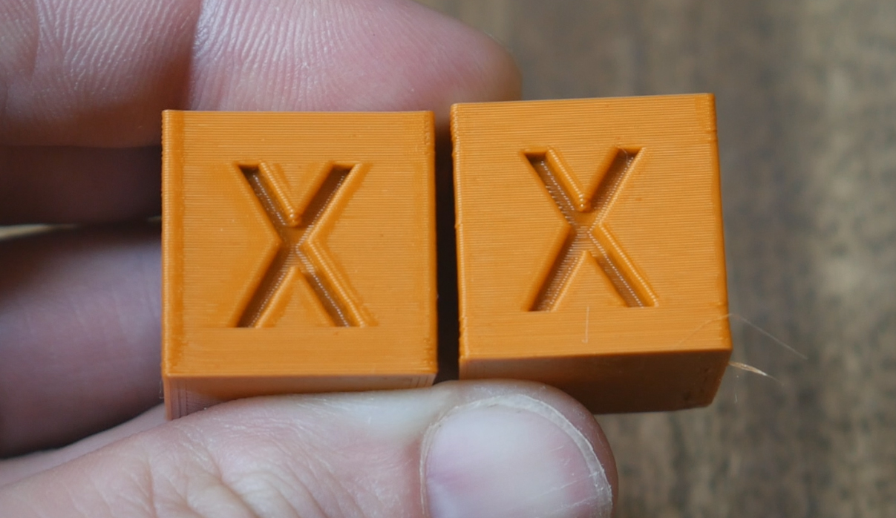Interpreting Results:
Please use the following video as a guide to this test:
The cube should look similar to those at the top of this page. If there are no major issues, please continue to the next step. If there is a significant defect, the culprit will likely be found by working through the frame tab. Minor issues will hopefully be resolved with the subsequent tests.
Extruder E-steps Calibration
Aim:
To determine the correct amount of steps Marlin firmware needs to send to the extruder stepper motor for accurate movement.
When required:
Base calibration, as well as any time there has been a change to the extruder/hot end.
Tools:
Ruler, permanent marker, terminal software such as Pronterface or Octoprint.
Instructions on how to setup terminal software can be found here.
For the X, Y, and Z axes, the steps per mm is usually consistent between printers and rarely changes with modifications. As long as belts are tight and true, it rarely needs to be tuned.
For the extruder however, variations in extruder hardware and filament means it is worth properly calibrating the extruder steps per mm, or E-steps.
This can be done by sending simple gcode commands via terminal to extrude a set amount of filament, then measuring how much filament actually went through the system.
Special Note:
This calibration is best done with the extruder detached from the hot end, so no restriction is present on the movement. If it is convenient, you can partially disassemble the printer so the output of the extruder is open and the filament exits in free air. If this is inconvenient, the process below aims to minimise restrictions by extruding very slowly and with a slightly higher temperature. The results from this should still be reliable.
Firstly, we need to know the existing E-steps value. To find this, enter:
M92
If you only receive an ok message from this, alternatively you can look for the M92 line after entering:
M503
M92 is used to report or set the steps per mm for each axis. M92 by itself will report the current parameters. We want to make note of the number after E, in the example below, 93.00:
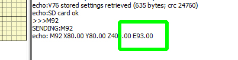Manually move the nozzle high enough above the bed to provide adequate clearance to extrude filament. Now heat up your hot end to whatever temperature you usually print with plus 10 degrees. Once the temperature is stable, enter:
G91
G91 puts the printer in relative movement mode. This means requesting 100mm of filament adds 100mm to the current position, instead of moving to the specific position of 100mm.
For Klipper and Rep Rap Firmware, M83 is used to select relative extruder movement instead.
Now we take a permanent marker and put a mark 120mm from the entry to the extruder:
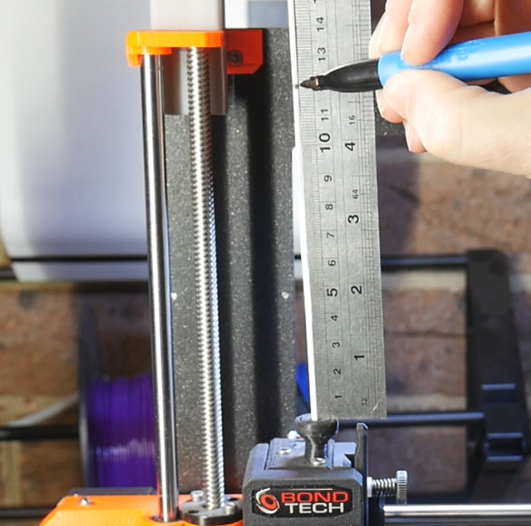Next, we enter:
G1 E100 F50
G1 sends a move command to the printer, in this case asking the extruder to advance 100mm at a speed of 50mm/min.
The filament will then very slowly go through the extruder (and hot end). Once the extrusion finishes, we measure the distance between the mark and the entry to the extruder.
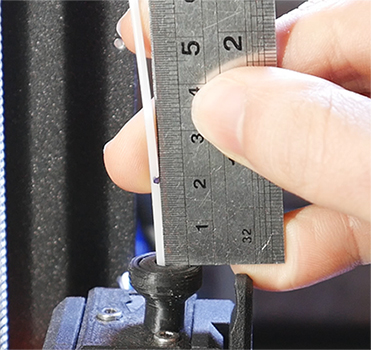Ideally, 20mm remains, which means exactly 100mm was extruded. If your distance is anything other than this, complete the form below to calculate the correct E-steps:
E-steps calculator
Although starting a new print or power cycling will achieve this, it may be safer to put the printer back into absolute position mode after completing this calibration by sending:
G90
For Klipper and Rep Rap Firmware, M82 is used to select absolute extruder movement instead.
Storing the updated E-steps
Once you have determined the correct value, it must be saved to the firmware to take effect on subsequent prints. Although it can be hard coded into the firmware by recompiling Marlin, it is far easier to use gcode to achieve this.
In a terminal, enter:
M92 E[your new value]
Obviously, you would substitute in your E-steps value after the E. Save to EEPROM with:
M500
Special note: Prusa has disabled M500 saving to EEPROM on some printers (eg. Mini). In these cases the above M92 gcode must be added to the start gcode in your slicer to be read before every print.
You can also use the Configuration menu on the LCD to make this change, but with a large change (eg. switch to geared extruder) it may take considerable time to turn the knob enough to reach the desired value. Don't forget to Store Settings to save to EEPROM.
Special note for dual/multi extrusion
By default, Marlin expects the e-steps for each of your extruders to be the same. To work around this, you must compile with DISTINCT_E_FACTORS uncommented/enabled in configuration.h:
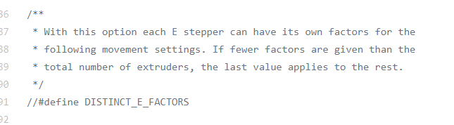You will then be able to enter a unique M92 value for each extruder.
If recompiling the firmware is not an option. The M92 command for each extruder can be inserted into the slicer 'tool change' section. This way the correct e-steps will be set just before extrusion for that tool takes place.
Slicer Flow Calibration
Aim:
To determine the correct amount filament to be extruded by the 3D printer as directed by the slicer.
When required:
Base calibration, as well as any time there has been a change to the extruder/hot end. You may wish to revisit this after tuning linear advance.
Tools:
Your favourite slicer. Accurate digital/vernier calipers (two decimal places is much more preferable to a set with only one).
Our E-steps are now correct in the firmware, so we will move on to calibrating the slicer. Each slicer has a setting to control the overall amount of filament extruded by the printer. If the flow rate is increased, more filament will be extruded. If the flow rate is decreased, less filament will be extruded.
In Simplify3D and PrusaSlicer, this is called Extrusion Multiplier. Cura calls it Flow.
My method of determining the correct flow rate is to print a hollow, single wall cube with a specified wall thickness, then measure the actual thickness of the wall and adjust the flow rate in the slicer to suit.
Some people prefer to have multiple walls and measure them together. For example, if the extrusion width was 0.4mm with two perimeters, then you would be hoping to measure 0.8mm for the cube wall. This does introduce more variables, such as the amount of perimeter overlap, and therefore a risk of the process failing. This is why I personally prefer a single wall cube, but each to their own.
Unfortunately, I can't provide pre-sliced gcode for this process. It is vital to use gcode generated by YOUR slicer. Setting up your slicer to print the cube in the right way should be simple by following these steps:
| 1. Import STL | cube.stl | ||||
| 2. Turn off infill | Infill > Infill density: 0% | General settings > Infill percentage: 0% | Print settings > Infill > Fill density: 0% Also set infill to 0% on main panel |
Print settings > Infill > Sparse: 0% Also set infill to 0% on main panel |
Template > Infill > Infill density: 0% |
| 3. Turn off top layers | Top/bottom > Top/bottom thickness > Top layers: 0 | Layer > Top solid layers: 0 | Print settings > Layers and perimeters > Horizontal shells > Top: 0 | Print settings > Perimeters and Shell > Horizontal shells > Top: 0 | Template > Solid Fill > Top solid fill layers: 0 |
| 4. Ensure wall thickness is a known value. Substitute whatever values you like here. This example uses 0.4, which is common for a 0.4mm nozzle and 0.2mm layer height. |
Walls > Wall thickness: 0.4 | Extruder > Extrusion width > tick manual > 0.4 | Print settings > Advanced > Extrusion width > Default extrusion width: 0.4 and Print settings > Advanced > Extrusion width > Perimeters: 0.4 and Print settings > Advanced > Extrusion width > External perimeters: 0.4 |
Print settings > Width and flow > Extrusion width > default: 0.4 and Print settings > Width and flow > Extrusion width > perimeter: 0.4 and Print settings > Width and flow > Extrusion width > external perimeter: 0.4 |
Template > Extruder > Extrusion width: 0.4 |
| 5. Set outer wall thickness to single extrusion | Walls > Wall line count: 1 (Also ensure Walls > Alternate extra wall is disabled) |
Layer > Outline/Perimeter shells: 1 | Print settings > Layers and perimeters > Vertical shells > Perimeters: 1 | Print settings > Perimeters and shell > Vertical shells > Perimeters: 1 | Template > Layer > Shells: 1 |
| 6. Set flow rate to default: 1.0 / 100% | Material > Flow: 100 & Material > Initial Flow: 100 (first layer flow) | Extruder > Extrusion multiplier: 1.0 | Filament settings > Filament > Extrusion multiplier: 1 | Filament settings > Filament > Extrusion multiplier: 1 | Primary extruder > General > Flowrate: 100% |
| 7. Enable vase/spiral mode (optional) | Not recommended for Cura. Testing suggests the flow rate is increased which will void the test. | Layer > Single outline corkscrew printing mode (vase mode) | Print settings > Layers and perimeters > Vertical shells > Spiral vase | Print settings > Perimeters and shells > Vertical shells > Spiral vase | Template > Layer > Spiral vase mode |
| 8. Expected result: | 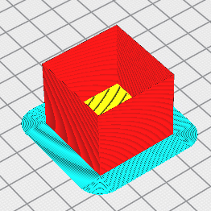 | 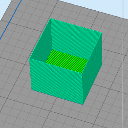 |  |
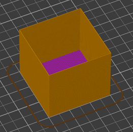 | 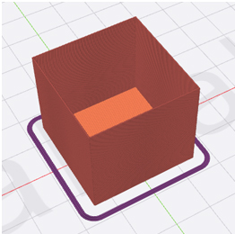 |
Special note:
Some other factors may affect the accuracy of the result.
Some slicers have a minimum layer time, which on a fast print like this, may slow down the feedrate significantly and alter the wall thickness. You may disable this in the slicer, but if your part cooling system is insufficient, the walls may become very hot and deform.
To overcome this, you may scale up the X and Y dimensions of the cube. As long as the file is sliced as described above, the wall thickness will not alter from this change in scale and the test will be valid.
Now slice and print!
Interpreting Results:
Use digital/vernier callipers to measure the outer wall thickness of the hollow cube. Take measurements in multiple places/sides and average them. You may wish to cut/tear off the lower and upper layers of the cube. This is to remove portions with elephant's foot and/or other abnormalities.
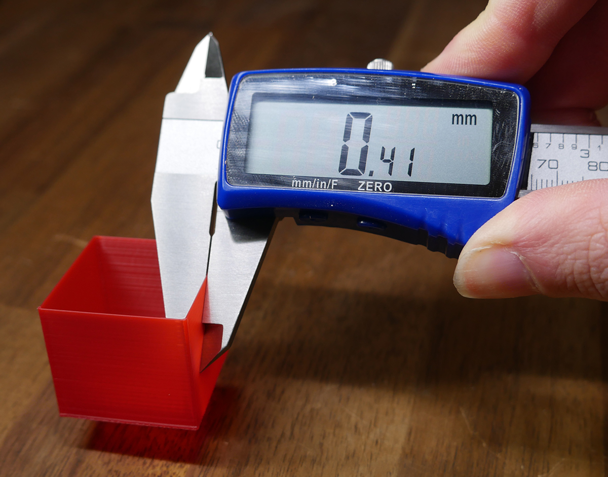If your measurement is significantly off, the following calculator can then be used to calculate the new flow rate:
Flow rate calculator
| Cura / ideaMaker | Simplify3D / PrusaSlicer / SuperSlicer |
|---|---|
Important note!
What you see with your eyes is more important than a theoretical calculation. After you have performed this calibration, please adjust the flow rate higher or lower based on what you actually see.
For example, the cube shown in the thumbnail of the XYZ 20mm calibration cube by iDig3Dprinting:

This print shows clear signs of under extrusion. There are gaps in the top infill as well as gaps between the perimeters and infill. Despite what any calibration procedure determined, the flow rate for this slicer/printer combination needs to be increased.
This article on all3DP has examples of what over extrusion looks like.
Can I use this flow value in the other tests on this site? - Important!
The short answer is: not really.
The gcode generators on this site work by using javascript to modify source gcode originally created by Simplify3D. However, when you completed the calibration test above, you sliced your own gcode, making your own baseline and then making a flow adjustment relative to that. Therefore, this test is unique from the others on this site which is why the flow rate doesn't necessarily translate.
Let's say your old flow rate was 100% and you have tested and corrected this to 96%. The gcode on this site originally had a flow rate of 90% when sliced, so applying your 96% to that gives a final result of 86.4%, not 96%. Your slicer profile settings will also be different in other ways, which further complicates matters. Therefore, there is not a straightforward correlation between your slicer and my gcode generators.
The aim of the site is to discover ideal settings you can apply to your own slicer profile, not to optimise the gcode created by the generators. Keep this in mind and focus on the aim of each test, rather than the general print quality.
If you are experiencing significant over or under extrusion that prevents you from using the tests properly, by using the custom start gcode function on this site you can optionally issue an M221 to override the values in the generatored gcode. For example, using M221 S90 would tell the firmware to only extrude 90% of what the gcode asks for. This is an easy method for making a quick correction that will alow the tests to complete successfully.
Stepper Motor Current Tuning
Aim:
To set the correct amount of current supplied to the stepper motors of the printer. This is set with the stepper motor drivers, located on the mainboard.
When required:
If steps are being skipped/missed. If the stepper motors are too hot to touch. When significant changes are made to the motion system (e.g. heavier bed, conversion to direct drive from bowden tube).
If your 3D printer is running fine without hot stepper motors, you may skip this step.
Tools:
For newer, 'smart' stepper motor drivers: terminal software such as Pronterface or Octoprint.
For older stepper motor drivers: a multimeter, small screwdriver and a spare wire with alligator clips (optional but recommended).
Instructions on how to setup terminal software can be found here.
Setting the stepper driver current is an important step in calibrating a 3D printer, although typically the value does not need to be exact. There is a window within which the printer will operate without issue.
General methods are used on this page, but if you are after more detail on a specific driver, my stepper motor driver guide playlist may be of use.
Although we target a specific current, the following rule of thumb is the most important factor:
Rule of thumb:
If the stepper motor is missing steps or you are experiencing layer shifts, the stepper current needs to be increased. This will supply more torque to the motor but also make it (and the driver) run hotter.
If the stepper motor is too hot to touch, the stepper current needs to be decreased. This will remove torque and make the motor (and the driver) run cooler.
Unfortunately, sometimes a stepper motor may be running hot and still missing steps. The following may apply in these cases:
- In the case of the extruder stepper motor, there may be an obstruction such as a partially blocked nozzle, PTFE tube unseated, hot end temperature too low (increased resistance to melting/flow) and/or first layer too close (nozzle jammed against bed, nowhere for plastic to exit).
- For X, Y and Z, the stepper motor may be undersized for the mass it is pushing. This can occur when increasing the size of the printer (e.g. Ender Extender kit), adding something heavier to the bed (e.g. glass/mirror plate), and/or converting from bowden tube to a heavy direct drive extruder.
- If there is some sort of mechanical misalignment that makes movement a lot harder. This may be a V-roller that is far too tight or a misaligned Z axis leadscrew causing the Z axis to bind.
- The acceleration/jerk and printing speeds are too aggressive for the stepper motors.
- Each stepper motor driver has a rated current, if this is too high it will run very hot and potentially cause missed steps. Active cooling can help this, but the current should still be still within the safe specifications for that driver.
If tuning the stepper driver current is unable to find a sweet spot, the good news is you can upgrade to a larger stepper motor easily in most cases. Nema17 steppers have the same mounting pattern and output shaft diameter, however you should still check your machine to ensure there is enough room for a longer stepper before any purchase. With all else being equal, a longer stepper motor will be capable of more torque and handling higher current.
Depending on the stepper motor driver, there are two ways of setting the current:
1. Physical:
For older stepper motor drivers or TMC drivers running in legacy mode, the current is set by turning a trim pot screw on the top of the driver to raise or lower VREF, which in turns sets the driver current.
2. Gcode:
On TMC drivers, the current is set directly with gcode commands. This can be set in the firmware, via a terminal or by using the printer's LCD. This value should then be saved to EEPROM to stay persistent.
We will cover these one at a time below.
Peak Current and Sense Resistor Value
Setting stepper driver current accurately relies on knowing two values: the peak current that the stepper motor is rated for and the sense resistor value on the stepper motor driver.
For newer TMC drivers, the sense resistor value is already known. For older drivers, methods for determining this are seen in the following snippet. Methods for determining the stepper motor peak current are shown too:
1. Physical
I have covered this in detail before, so please use the embedded video below (queued to the correct time) to see how to set the VREF. The process is essentially the same for any driver.
The VREF is just a reference voltage to assist us in setting the driver current. It is used because it is much simpler to measure voltage rather than current with a multimeter. Typically these drivers have the peak/max current set.
The general steps for setting current via VREF are the same between drivers, only the VREF formula changes:
- Power up mainboard via 12/24V normal power supply, NOT just USB 5V.
- Set multimeter to DC voltage, max 2V range.
- Connect black/negative multimeter probe to ground. This can be a negative terminal or the top of the USB connector.
- Connect the red/positive probe to the trim pot on top of the driver to measure VREF.
- Turn the trim pot SLOWLY with a screwdriver, then remeasure.
- Repeat for each stepper motor driver.
Alternatively, you can use an alligator clip wire between the red probe and the metal shaft of the screwdriver, so that a VREF reading is available as you turn the screwdriver. This procedure is shown in this snippet:
The VREF formulas for drivers I have tested are as follows:
A4988
The typical sense resistor value is 0.1. Please check your drivers to be sure.
VREF = 8 x max current x sense resistor value
Then use the video above as a guide to the process.
DRV8825
The sense resistor value should be 0.1. If it is:
VREF = max current / 2
The process is then the same as for A4988s as shown in the video above.
TMC2100
Like the TMC drivers covered in the gcode section, the current for the TMC2100 is set not as a peak, but instead as RMS. To determine RMS, divide the peak current by 1.41.
VREF = (RMS current * 2.5) / 1.77
The process is then the same as for A4988s as shown in the video above.
TMC2208 - Legacy/standalone mode (as found in Creality silent boards)
Like the TMC drivers covered in the gcode section, the current for the TMC2208 (legacy mode) is set not as a peak, but instead as RMS. To determine RMS, divide the peak current by 1.41.
VREF = (RMS current * 2.5) / 1.77
The process is then the same as for A4988s as shown in the video above.
Special note for some Creality silent boards
Courtesy of ZuckMe:
"My creality silent board has R150 sense resistors not R100 so the VREF formula is wrong, for details here": EEVBLOG
LV8729
There are mainly two kinds of stepper driver boards with this driver.
One has a resistor labelled R100 on the bottom, and on the other the resistor is labelled R220. Which formula you use is based off of this resistor
The process is then mostly the same as for A4988s as shown in the video above, but with the correct formula for your driver board.
R100:
VREF = max current / 2
R220:
VREF = max current * 1.1
2. Gcode
TMC drivers connected via UART or SPI serial can easily have their current set via gcode. This is not peak current, but rather RMS (root mean square) current. Rather than the maximum, think of this as more a typical/average current, where the driver will be operating mostly. To convert the peak current from stepper motor specs to RMS, divide it by 1.41.
The current can be set in a few different ways for each driver:
TMC2208, TMC2209, TMC2130, etc
These drivers should have a sense resistor value of 0.11. This is the default in Marlin, so when compiling it should already be set (X_RSENSE for the X axis, Y_SENSE for Y and so forth):
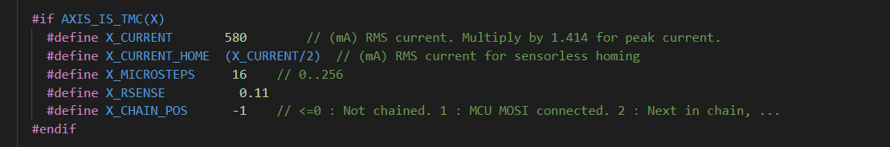Therefore, you can set your RMS current directly in the firmware when compiling. This is X_CURRENT for the X axis, Y_CURRENT for the Y and so forth. After flashing firmware, remember that the previous value may still be stored in the EEPROM. Check your values by entering M503 in a terminal.
You can also set the RMS current via terminal with M906. Please follow the link to see the reference. An example of setting the X axis current to 680 would be:
M906 X680
Don't forget to save the value to EEPROM afterwards with:
M500
Finally, the LCD Configuration menu can be used to set the RMS current. Don't forget to save afterwards by clicking on Store Settings.
TMC5160
The TMC5160 is the same as the other TMC drivers apart from one important difference: the sense resistor value needs to be changed from 0.11 to 0.075 when compiling the firmware.
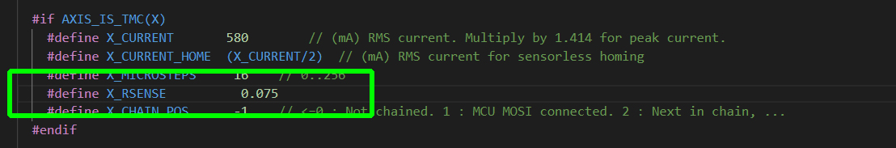After this change is made, the same procedures apply:
You can set your RMS current directly in the firmware when compiling. This is X_CURRENT for the X axis, Y_CURRENT for the Y and so forth. After flashing firmware, remember that the previous value may still be stored in the EEPROM. Check your values by entering M503 in a terminal.
You can also set the RMS current via terminal with M906. Please follow the link to see the reference. An example of setting the X axis current to 680 would be:
M906 X680
Don't forget to save the value to EEPROM afterwards with:
M500
Finally, the LCD Configuration menu can be used to set the RMS current. Don't forget to save afterwards by clicking on Store Settings.
Retraction Tuning
Aim:
To set the correct parameters concerning retraction during 3D printing, including retraction distance, speed, extra restart distance, prime speed and z hop.
When required:
Initial calibration, any time the hot end or extruder is changed, when trying a new type/brand of filament.
Tools:
Gcode generator on this page.
FDM works by melting plastic filament and extruding it accurately one layer at a time to build up 3D geometry. By its nature, the plastic will continue to ooze and drip out of the nozzle even when not pushed by the extruder. To combat this, our slicers use retraction, where the filament is withdrawn from the hot end, alleviating pressure and minimising ooze. When properly tuned, this has the effect of removing stringing, the unwanted oozing of plastic between two points of the model.
An example of fine stringing can be seen in the following image. It appears like cobwebs:

Special note:
Temperature tuning and retraction tuning are related to each other. You could do them in either order, and it may be necessary to tune back and forth to reach an ideal result. A higher nozzle temperature will promote more oozing and stringing, whereas a lower temperature will reduce oozing and stringing.
Besides hot end temperature, there are five parameters we will be tuning relating to retraction. In the table is a description of each as well as where the setting is found in the most popular slicers. By far the most important is retraction distance.
| Retraction Parameter | |||||
|---|---|---|---|---|---|
| Retraction distance: The length the filament is pulled away from the nozzle in mm. | Travel > Retraction distance | Extruder > Retraction distance | Printer settings > Extruder 1 > Retraction > Length | Printer settings > Extruder 1 > Retraction > Length | Template > Extruder > Retraction > Retraction Material Amount |
| Retraction speed: The speed at which this filament is withdrawn in mm/sec. | Travel > Retraction speed | Extruder > Retraction speed | Printer settings > Extruder 1 > Retraction > Retraction Speed | Printer settings > Extruder 1 > Retraction > Retraction Speed | Template > Extruder > Retraction > Retraction Speed |
| Extra restart distance: The retraction distance will be reversed when the travel (non-extruding) movement is over. This is typically zero, but you can opt for extra filament to be extruded (a positive value) or less than what was retracted (a negative value). Also measured in mm. | Travel > Retraction extra prime amount | Extruder > Extra restart distance | Printer settings > Extruder 1 > Retraction > Extra length on restart | Printer settings > Extruder 1 > Retraction > Extra length on restart | Template > Extruder > Retraction > Extra Restart Amount |
| Prime (unretract) speed: The speed at which this filament is reintroduced to the nozzle in mm/sec. | Travel > Retraction prime speed | Not supported. S3D will use retraction speed as prime speed. | Printer settings > Extruder 1 > Retraction > Deretraction speed | Printer settings > Extruder 1 > Retraction > Deretraction speed | Template > Extruder > Retraction > Restart Speed |
| Z hop: The amount the nozzle lifts vertically in mm during a travel (non-extruding) movement. After this movement, the correct Z value is then restored before the filament is unretracted/primed again ready for printing. | Travel > Z hop when retracted | Extruder > Retraction vertical lift | Printer settings > Extruder 1 > Retraction > Lift z | Printer settings > Extruder 1 > Retraction > Lift z | Template > Extruder > Retraction > Z Hop at Retraction |
Retraction tuning tower generator
The following form will create a retraction tower to conveniently test back to back parameters in the same print. Of the three available parameters, it is best to change only one per test print. For example, keep the retraction speed and extra restart distance the same, but vary the retraction distance over each segment. Changing more than one parameter makes is hard to tell what made the difference. The print is quick, so repeat the test varying other parameters until you are happy with them all.
Here is the STL if you would like to slice a similar test yourself: retractiontestv2.stl. This file has been updated to V2, which changes the external shape from circular to pentagonal. It is also prints slightly faster. The original file is still available here: retractiontest.stl
Interpreting Results:
Please use the following video as a guide to this test:
Inspect your finished print. Hopefully, there will be a clear difference between the segments that reflect the settings you entered. In the example below (Ender 3 direct drive, PLA, linear advance enabled), the retraction distance varied from 0.4 up to 1.4mm in 0.2mm increments. Segments A and B have the least stringing. Based on this, I would assume that a retraction distance of 0.4 - 0.6 is best for this printer. this is consistent with linear advance being enabled.
I would then repeat the test, setting the same retraction distance for each segment and instead altering the retraction speed to dial that in. A third test could then take place to test extra restart distance, a fourth for Z hop, etc.
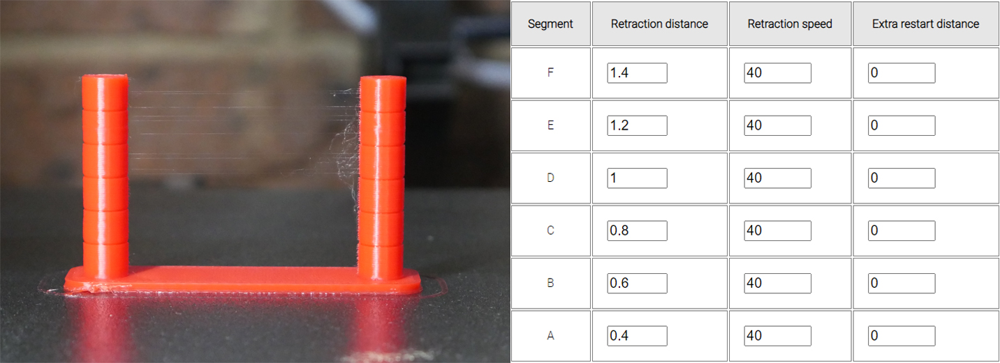If you would like to be able to customise additional parameters for a retraction test, Prahjister has made a great tool: Retraction Calibration Tool. It has a higher degree of difficulty due to needing more parameters but is ultimately more powerful. Warning! This is an external website and beyond my control. Some users have reported success and others have had issues with the gcode generated. As with the gcode made by this website, monitor your printer during printing with a view to cutting the power if needed.
I can't translate my test results to my own slicer! Other factors beyond the scope of this test - Important!
After you have found a combination of parameters which works well on your machine, the idea is to then translate them to your own slicing profile. If you can't replicate the results, please work through the following:
- Auto cooling (PrusaSlicer) / Speed Overrides (Simplify3D) / Minimum layer time (Cura): Most slicers have a setting to detect if a layer will complete in less than a certain time threshold. In this case, all movement for that layer is slowed, including those related to retraction, to increase the layer time to meet the target. The gcode generated by the this page has this setting OFF. If your results vary, trying turning this setting off in your own slicer too.
- Z hop speed: If you are using Z hop, the vertical feedrate for the Z movements is set to 20 mm/sec for these tests. Matching this in your slicer is advised if these tests look better than your own slicer results.
- Retraction acceleration: This will affect whether the retraction speed can actually be reached. The gcode generator below does not include any changes to what is set on your printer. You can change this with M204 and the R argument.
- Slicer settings such as coast and wipe: Coast stops extrusion slightly early to assist retraction. It effectively lets the hot end 'run dry' at the end of the printing movement to reduce ooze. This varies from slicer to slicer and isn't always necessary to tune.
Wipe moves the nozzle back towards the recently printed geometry to wipe ooze off. If you are having trouble reducing stringing, it may be a good option.
Both coast and wipe are turned off in the gcode generator below. - Maximum extruder feedrate: Your firmware may have a hard limit imposed on extruder movement that is below the retraction speed values you are attempting to use with the form above. You may need to use M203 to raise the extruder feedrate limit to try higher values for retraction speed. This potentially needs to be saved with M500 if you want it to be permanent.
- Travel feedrate: A travel move is one where the printer moves to a new location without extruding. The slower this move is, the more time filament will have to ooze from the nozzle and add to stringing. The default feedrate is set to 100mm/sec in the gcode generator above, and increases or decreases based on the user feedrate input. Matching this in your slicer is advised if these tests look better than your own slicer results.
- Travel acceleration: This test does not manipulate travel acceleration but increasing its value may help reduce stringing. You can change travel acceleration with M204 and the T argument.
- Linear advance: Linear advance, covered later in this guide, can drastically improve the accuracy of our extrusion. It has a significant impact of retraction (reducing the need), so after configuring linear advance you may need to revisit retraction.
- Slicer differences: The gcode generated below was originally sliced by Simplify3D. The settings you establish should translate to your slicer quite well but there may be idiosyncrasies. For instance, Cura measures extra restart distance in volume rather than length.
Temperature Tuning
Aim:
To set the ideal printing temperature for the hot end for a given filament.
When required:
Initial calibration, any time the hot end is changed, when trying a new type/brand of filament.
Tools:
Gcode generator on this page.
For this calibration, we are only concerned with the temperature of the hot end, not the bed. The bed temperature will need to be matched to any given filament, and once a good value is found, you will generally stick with it.
Instead here we are tuning the temperature at which the filament is extruded. There is no universal temperature for a given filament. Variations in heater blocks and thermistor placement dictate this.
Rule of thumb and special note:
A higher nozzle temperature should result in stronger parts, particularly interlayer adhesion. Part surface may be shinier. The filament will be softer so ooze and stringing may be increased, and some surface detail potentially lost, especially on overhangs. A hot end temperature too high may damage parts of the assembly such as the internal PTFE tube.
A lower nozzle temperature should result in weaker parts, particularly interlayer adhesion. Part surface may be duller. The filament will be firmer so ooze and stringing may be reduced, with good surface detail, especially on overhangs. A hot end temperature too low can cause the hot end to jam.
Temperature tuning and retraction tuning are related to each other. You could do them in either order, and it may be necessary to tune back and forth to reach an ideal result.
The following form will create a temperature tower to conveniently test back to back parameters in the same print. There are five segments to vary the temperature. Generally the lowest temperatures would be at the start of the print (segment A) and the increase up to the highest by the top of the print (segment E).
Your 3D printer firmware will have a minimum hot end temperature extrusion is allowed and a maximum hot end temperature for safety. Make sure to keep within these boundaries to avoid errors.
Here is the STL if you would like to slice a similar test yourself: temperaturetowerv2.stl. This is an updated model that prints in less time, has more variation in overhangs, and has a narrow pyramid in each band to try and snap off to test layer adhesion.
The original design can be found here: temperaturetower.stl
Temperature tuning tower generator
Interpreting Results:
Please use the following video as a guide to this test:
Inspect your finished print. Hopefully, there will be a clear difference between the segments that reflect the temperatures you entered. In the example below (Ender 3 direct drive, PLA, linear advance enabled), the hot end temperature varied from 180 to 260 in 20 degree increments
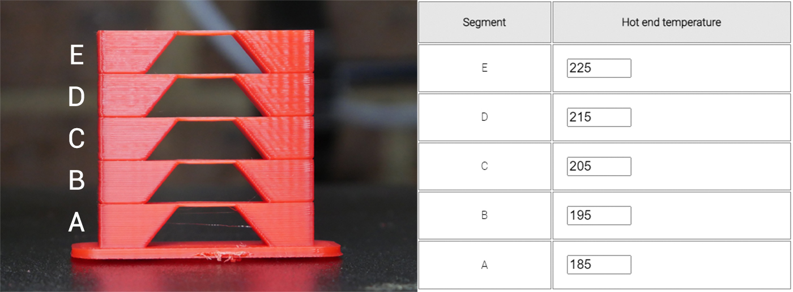As expected, surfaces becomes more glossy as the temperature increases. What was unexpected was surface rippling being more obvious as the temperatures went up. Overhangs and bridges all look good on this test, however the little spikes could not be printed accurately at the higher temps due to the part cooling system not keeping up. The coolest spike in segment A was very brittle, the spike on segment C the strongest, and the upper spikes too malformed to test accurately.
My previous hot end temperature was 200 degrees for this printer, but I will consider raising it to 210 degrees after this test to gain some interlayer strength without any trouble with part cooling.
Acceleration Tuning
Aim:
To find the right compromise between printing speed and quality, specifically related to surface artefacts such as ghosting.
When required:
Initial calibration, when significant changes are made to the motion system (e.g. heavier bed, conversion to direct drive from bowden tube).
Tools:
Terminal software such as Pronterface or Octoprint.
Gcode generator on this page.
Instructions on how to setup terminal software can be found here.
We set a feedrate or movement speed in our slicer, but the printer does not instantly reach these speeds. Like a motor vehicle, it needs time to accelerate. If the distance of the movement is short, it may not even have time to reach the specified speed. This can determined with the handy acceleration calculator, available on the Prusa website.
Complementary to acceleration we have jerk, replaced by junction deviation in newer versions of Marlin. These settings have differences, but both are essentially responsible for making sure the printer does not come to a complete stop between each movement, but rather decelerates an appropriate amount depending on the angle of the next 'corner'.
We will be tuning both of these parameters with another tower. The aim is to have a reasonably fast print time without inducing excessive ringing/ghosting. An example of bad ghosting is seen below. The features of the model are repeated across the surfaces due to vibration of the printer components:
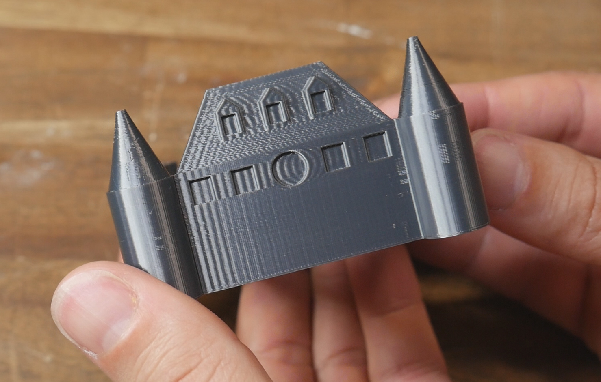I have previously made a detailed video guide on this subject, complete with many diagrams explaining the concepts. The tuning process depicted will be improved upon here with an easier to use calculator and custom gcode generator below.
Rule of thumb:
Higher acceleration and jerk will result in a faster print time, as the printer reaches top speed faster and maintains a higher speed when corning. This is harder on the printer, and may result in reduced lifespan of components and the need for more regular maintenance. It also introduces more surface defects such as ringing/ghosting.
Lower acceleration and jerk will result in a slower print time, as the printer reaches top speed more gradually and corners at a lower velocity. This is easier on the printer, with potentially increased component lifespan and less need for regular maintenance. It reduces surface artefacts such as ringing/ghosting, unless it is far too conservative, in which case it may introduce bulging in corners.
Calculating maximum feedrate - optional but strongly recommended
This is simplified test that will not be as accurate as using the gcode generator on the Speed/Max flow tab. If you would like to see it, you can toggle visibility here.
Acceleration Tuning
We will now produce an acceleration tower to conveniently test back to back settings in a single print. If you would like to slice the model yourself, here is the STL: accelerationtower.stl. It should be sliced with a normal base, but hollow, no top layers and only 2 perimeters.
With Marlin firmware, the only thing you need to know before this test is whether your firmware is set up for jerk (older) or junction deviation (newer). Entering M503 via terminal will give a list of printer variables:
- If the M205 line contains the letters X, Y & Z, your printer is running jerk. The numbers after the X,Y & Z are your current jerk values for each axis.
- If the M205 contains the letter J, your printer is running junction deviation. The number after the J is your current junction deviation value.
The image below shows an example of each of these scenarios:

Use the following form to customise the gcode to your liking:
Klipper uses both ACCEL and ACCEL_TO_DECEL. The difference between the is explained here.
Klipper uses a value known as Square Corner Velocity (SCV) instead of junction deviation or jerk, but the idea behind it is the same. A value of 5 mm/sec will allow the toolhead to slow to and maintain a 5 mm/sec speed for a 90 degree corner. This speed will be higher for a shallower turn and lower for a sharper turn.
RepRapFirmware uses M205 to set Max Instantaneous Speed Change instead of jerk or junction deviation, but the idea behind it is the same.
Acceleration & jerk/junction deviation tuning tower generator
The STL for this test is available here: accelerationtower.stl
Interpreting Results:
Please use the following video as a guide to this test:
You may initially think the X and Y labels are facing the wrong way, but they are not. This is explained and demonstrated in the video above.
You may also notice a few bits of stringing. These are a quirk of how the test was originally sliced and can safely be ignored.
Inspect your finished print. Hopefully, there will be a clear difference between the segments that reflect the acceleration values you entered. In the example below (Ender 3 direct drive, PLA, linear advance enabled), acceleration varied from 300 to 800 in 100 mm/sec/sec increments. Junction deviation was left at the default 0.08. The difference between each segment is subtle, but there is increased ghosting around the letter Y on the higher segments. In the lowest segment, the gentle acceleration means the nozzle spends more time in the corners and they tend to bulge. This would be more evident if linear advance was disabled.
The ideal segment will have the best compromise between low acceleration corner bulging and high acceleration ringing.
My previous value was 500, but a small increase in quality may be achieved from lowering the value to 400.
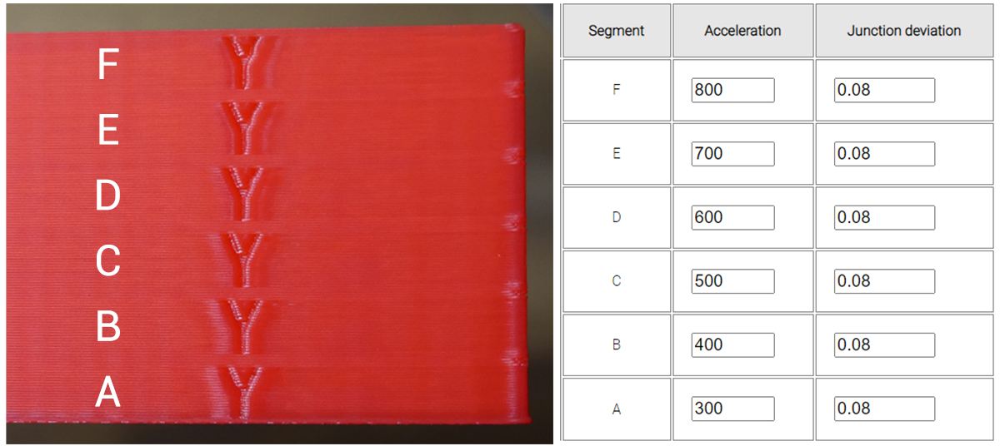Once you have an acceleration value you are happy with, you can update with:
M204 P400
where 400 is the value of the acceleration with the best compromise based on the tower test print.
It's also worth noting that the M201 value acts as a per axis limit for acceleration. For example, if you set the M204 print acceleration to 1000 but the X and Y M201 acceleration limits are only 800, then the M204 P value will be capped at 800. Use M503 to see the current M201 values, and if necessary, use M201 to set higher X and Y acceleration limit values to suit.
We can store the new value(s) to EEPROM by sending:
M500
You would then repeat the test with all of the acceleration values locked at your preferred value for each segment, but this time varying jerk/junction deviation.
To save for a printer with jerk (with a determined best compromise of 8 for this example), we would enter:
M205 X8 Y8
To save for a printer with junction deviation (with a determined best compromise of 0.05 for this example), we would enter:
M205 J0.05
Either way, we save to EEPROM afterwards with:
M500
Each of these parameters can also be entered and stored from the configuration menu of the Marlin LCD.
Once you have an acceleration value you are happy with, you can edit the [printer] section of printer.cfg
[printer] max_accel: 400 max_accel_to_decel: 400
where 400 is the value of the acceleration with the best compromise based on the tower test print.
Obviously you can enter a unique value for MAX_ACCEL_TO_DECEL compared to MAX_ACCEL.
You would then repeat the test with all of the acceleration values locked at your preferred value for each segment, but this time varying square corner velocity.
To save an example value of 8 you can edit the [printer] section of printer.cfg
[printer] square_corner_velocity: 8.0
Save config to restart Klipper with the changes in effect.
Once you have an acceleration value you are happy with, you can edit config.g with:
M204 P400 T[value]
where 400 is the value of the acceleration with the best compromise based on the tower test print. The T value represents travel acceleration, when no filament is being extruded. It can likely be a higher valu without any loss in quality.
It's also worth noting that the M201 value acts as a per axis limit for acceleration. For example, if you set the M204 print acceleration to 1000 but the X and Y M201 acceleration limits are only 800, then the M204 P value will be capped at 800. Look the current M201 values, and if necessary, use M201 to set higher X and Y acceleration limit values to suit.
You would then repeat the test with all of the acceleration values locked at your preferred value for each segment, but this time varying max instananeous speed change.
config.g> can then be updated to reflect the best results, for instance a value of 8:
M205 X8 Y8 Z[value] E[value]
Note you would likely leave Z and E unchanged from their original values.
Save config.g to restart the firmware with the changes in effect.
>Special note for Cura, PrusaSlicer and SuperSlicer:
Cura, PrusaSlicer and SuperSlicer all have the capability to control these parameters from the slicer by inserting appropriate gcode. If you are finding that your new acceleration values are not taking effect, you may need to also set them in the slicer. This is actually a desirable feature, as it allows more aggressive settings for infill and features that can't be seen in the final print, yet be more conservative for outer walls where aesthetics are paramount.
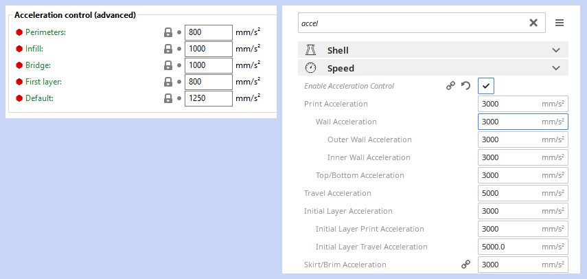Higher acceleration without ringing: Input Shaping
An amazing development in 3D printing is input shaping, which compensates for the machine's resonant frequency by altering stepper motor inputs to drastically reduce ringing. Available in Klipper and RepRapFirmware, input shaping allows much higher feedrates without a loss in print quality. To see it in action, see the videos below:
Linear Advance Tuning
Aim:
To tune the timing of the extrusion with the aim of reducing swollen corners and thinner walls. This results in a more consistent extrusion and a reduction in surface artefacts.
When required:
Initial calibration, when changing the extruder/hot end (especially if changing from bowden tube to direct drive), when trying new filaments.
Tools:
In a 3D printer, due to the pressure required to push the molten filament through the small opening of the nozzle, there is a small time delay from when the extruder pushes the filament to when it actually comes out the nozzle. Traditionally the movement of the extruder is matched to XY movements of the printer, so this means the start of a line will be under-extruded and the end of the line will be over-extruded. Linear advance unsynchronises the extruder movements from the XY movements, changing the timing of the extruder so the thin and thick sections are significantly reduced.
The concept and how to tune linear advance is explained in much more detail here:
Special notes:
Linear advance often goes by the name pressure advance. They are the same thing.
Linear advance is often not enabled by default in Marlin firmware. Therefore, the firmware must be recompiled with linear advance included. This is covered in the video above.
Linear advance is incompatible with certain stepper motor drivers. A prominent one is the TMC2208 when connected in legacy mode (as found on Creality silent boards). When connected in 'smart' mode via UART, this is not a problem.
Linear advance is not currently compatible with S curve acceleration (another Marlin feature), although it is possible to uncomment #define EXPERIMENTAL_SCURVE when adding linear advance as a work around.
Linear advance requires aggressive acceleration for the extruder and will work the motor harder. Higher current maybe required for the E driver, which will make it run hotter.
Linear advance is filament dependent. A different value is required for each filament to get the best results.
Testing for linear advance relies on the visual inspection of a single layer, therefore it is important to have your bed levelling/first layer reliable and repeatable.
Linear Advance Pattern Generator
Marlin has excellent linear advance documentation and a test gcode generator already made, so there is no point recreating a competitor here. An example of how to use it is shown in the video above, and it can be found here: Marlin Linear Advance Pattern Generator
The parameter we tune for linear advance is called the K factor. The K factor relates to the amount of flex or compression in the filament and the length of the path between the extruder and hot end.
A higher K value suits a bowden tube and/or flexible filaments. This is because the filament can flex sideways in the tube in between the extruder and hot end, adding to the extrusion time delay. A good starting point for a bowden extruder is a K value of 1.0.
A lower K value suits a direct drive extruder and more rigid filaments. With these characteristics, the transfer of filament between extruder and hot end is more direct with less time delay. A good starting point for a direct drive extruder is 0.2.
The above video takes you through how to use the pattern generator, which basically involves inputting printer and slicer parameters, before clicking to download the gcode file.
Using the suggested starting K values above, you would then pick an upper and lower limit either side of this for a preliminary test.
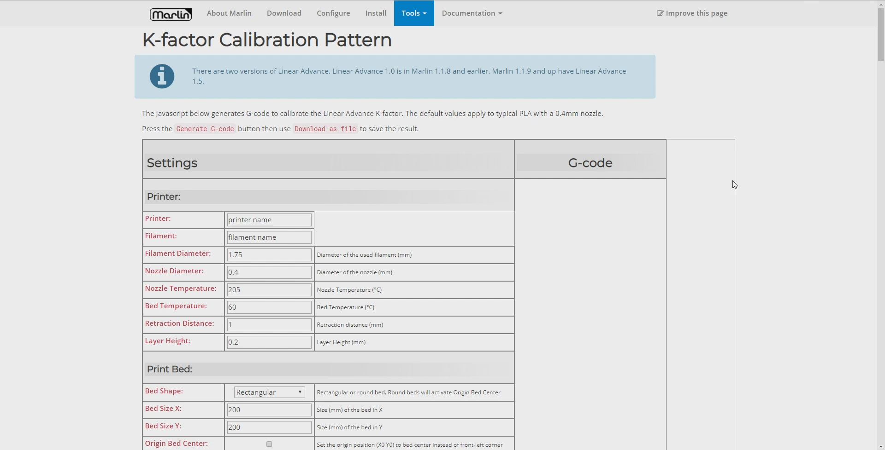Interpreting results:
Printing the gcode generated by the pattern generator with yield a result like this:
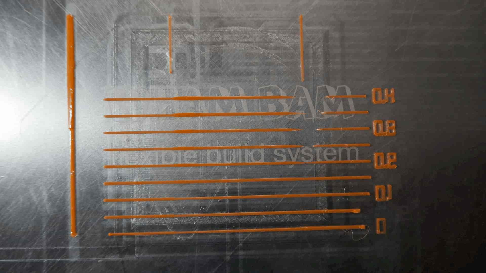Some of the horizontal lines should have obvious thick and thin portions, and some may even have large gaps. You are looking for the line with the most consistent extrusion width from left to right. The K value for this line will be printed to the right of the line. At this point, as shown in the video, you may wish to repeat the test with a narrower range of values either side of this best K value. This will help determine the best value by using a 'higher resolution'.
Saving the K Factor
With many of the parameters we have tuned so far, we can permanently save them to either the firmware or EEPROM. As the linear advance K factor is filament dependent, this may not be the best solution if you print with varied filaments, and instead you may prefer to save using your slicer profile. All methods are covered below.
The K factor can be set by using the M900 gcode:
M900 K0.11
It can be permanently stored EEPROM by following up with:
M500
Both the setting and saving of the K factor can also be achieved using the LCD menu.
You may prefer to use the M900 gcode command in your start gcode instead, particularly if your slicer supports different start gcodes for different materials. In the event that you use start gcode, unless an M500 follows, the setting of the K factor will be temporary. When the printer is next restarted the value stored in the EEPROM will be restored. When new print starts the value given it its start gcode will overwrite the previously set value.
Linear advance can be temporarily be disabled by setting the K factor to 0:
M900 K0
XYZ steps Calibration
Aim:
To ensure that when the firmware attempts a certain amount of X, Y, and Z travel, the actual movement of the machine is accurately matches.
When required:
This step is not necessary for many people, but is still worth doing if you are going over the machine in detail. Consider this procedure neccessary if your printed parts are clearly over or under sized.
Tools:
The best tool for this job is a dial gauge. These are a precision measuring device and well suited. You can also use a set of digital calipers but they will be less useful.
The dial gauge also needs to be mounted. A universal design is tricky because of variations in 3D printers and dial gauges, but the example I used is here: Dial gauge mount on Thingiverse
You will also find the XYZ 20mm calibration cube by iDig3Dprinting referred to on this page, but printing it is not a mandatory part of the calibration process.
This tab serves as a companion for this video: Calibrating your XYZ steps using a dial gauge for maximum accuracy
It is common practice for 3D printer users to measure a 20mm calibration cube to see how dimensionally accurate their machine is. While this is a very valid test to measure the accuracy of their printed parts, it is not a suitable measurement to base adjustments of the X, Y and Z steps per mm.
X, Y and Z steps per unit
Many people are familiar with E-steps, which is the value in the firmware that dictates how many steps the extruder stepper motor needs to rotate to push through 1 unit of material (typically millimetres). Depending on if the extruder is geared or not, this number can vary quite a lot and needs to be set accurately for prints to come out properly. Calibrating E-steps already has its own tab.
If the objects you are printing are not the correct size, then adjusting the X, Y and Z steps is a suitable step to fix the problem. However, as you will see on this page, there are other factors that contribute to print accuracy that should be considered first.
Finding out the current values for your X, Y and Z steps
There are two choices here, which are both convient:
- On the Marlin LCD menu, go to Configuration > Advanced Configuration > Steps per mm. Your machine may say steps per inch if that is how you have it configured. The values will be shown on the LCD:
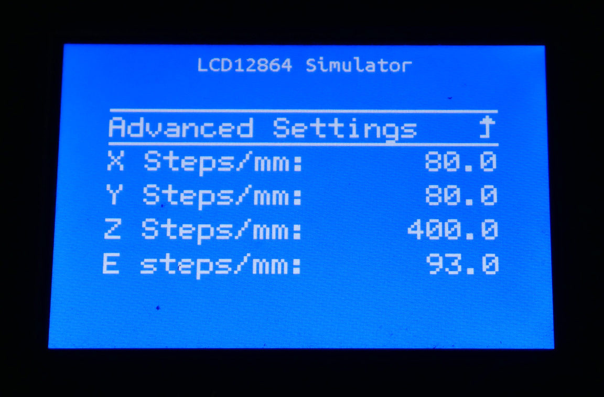 - Connect via terminal, and send M503. This will report the variables currently being used by the firmware. Somewhere in the long outpout, it will say 'Steps per unit' and list your values on the next line:
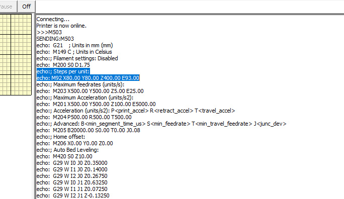
How are X, Y and Z steps usually calculated?
The steps per unit for the Z, Y and Z axes are a function of the mechanical and electronic components of the printer. These include the type of stepper motor, the type of belt/lead screw, the amount of micro stepping and so on. An excellent resource exists in the Prusa RepRap Calculator. In the 'Stepper Motor' section, you can enter the specifications of your machine and the correct steps per unit will be calculated.
What not to do - Measuring printed parts
Often people will print a 20mm calibration cube and measure the external faces to see how accurate their machine is. While this is a valid measurement for determining how accurate the output of the printer is, it is NOT the correct measurement for calibrating X, Y and Z steps. This is because the printed part is the result of many more variables other than how far the X, Y and Z axes are moving during the print.
A simple demonstration of this can be made by printing three 20mm calibration cubes, with no changes to the machine but the extruder flow rate altered for each test. In the image below, the cubes have flow rates of 80%, 96% and 120%. Although they look identical from a distance, there is a clear variation in their external dimensions when measuring with calipers.
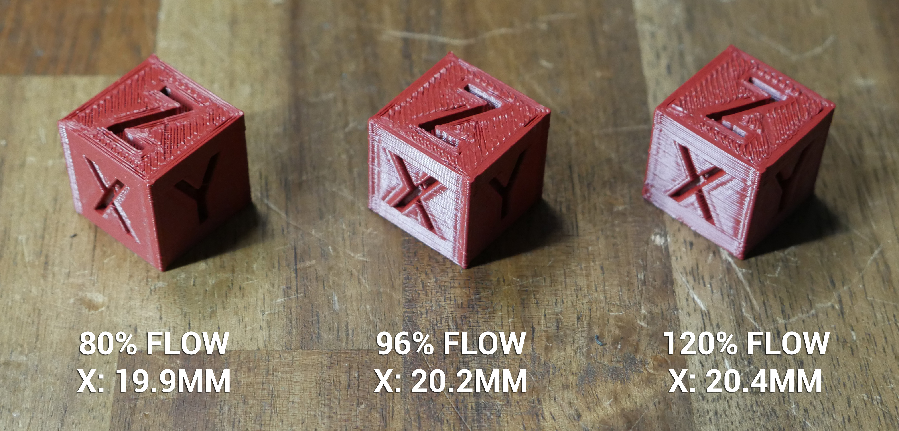If the cube can vary this much without adjusting steps per unit, it goes to show that printed parts are not a reliable indicator of whether the steps per unit are correctly configured. Commenters on the video have also pointed out that the printed plastic will shrink as it cools, and this will differ for different materials and even for different colours/age/filament condition. Another relevant variable that ruins our results. Yes, we do care about the accuracy of the final part, but we need a better way to measure X, Y and Z movement.
What to do - Measuring raw axis movement
The primary variable we need to eliminate is the extruded plastic. Therefore we want to measure the movement of each axis when not printing, comparing target vs actual movement. This is where our calipers or preferably a dial gauge comes in handy. Our aim is to mount the dial gauge so that when we move an axis, it measures eactly how far it has travelled.
Dial gauge mounting
There are potentially two ways to mount the dial gauge:
- To the print head, so that it can measure the relative movement of the Z axis up and down.
- Off the machine, so the dial gauge tip is pressed against moving components of the printer to measure the relative movement of the X and Y axes.
In either case, we have some rules we must adhere to with mounting:
- The dial gauge must be rigidly mounted. If it can wiggle or the mount can flex, the reading will be inaccurate.
- The linear motion of the dial gauge must be parallel to the motion of the axis being measured, or perpendicular to the object it is pushing on. If we imagine the dial gauge was mounted 45 degrees to the axis being measured, we can see that the reading will only be half of the movement.
- When mounting to the machine to measure the Z axis travel, ensure the machine can still home safely without the dial gauge running out of travel. If this is not possible, home the machine first and then fit the dial gauge.
If you search Thingiverse or other file sharing sites, you may find a dial gauge mount for your particular machine. This can be difficult because the mount also has to suit your dial gauge. For this guide, I designed and printed my own dial gauge mount to suit a 12mm round rod base, and a printhead mount to suit the printermods.com xchange system: Dial gauge mount on Thingiverse
Manual movements and measurements
Manual movements can be made from the printer's LCD controls, by connecting via USB with Octoprint or Pronterface and using the provided interface buttons, or if you have a touch screen, with the buttons for manual 10mm movements.
You may need to home the machine first, as some firmware configurations will not allow manual movements until this takes place. As described in the previous section, it may be safer to home without the dial gauge in place.
Before measurement, we must know the range of motion of the dial gauge and mount accordingly. If the dial gauge can only move 25mm, there is no point in requesting a 30mm movement. Doing so might damage the dial gauge when it bottoms out.
Position the dial gauge so that it is part way through it's range of travel and zero the display.
Use the buttons in your chosen software to move one axis a designated distance. 10mm is generally acceptable and fits within the range of motion of most dial gauges. (100mm would actually be better but is beyond the range of the dial gauge).Take note of the measurement. Reverse the movement using the opposing button and see if the machine returns back to 0.00 on the dial gauge.
You can also issue two 10mm movements and see if any error is consistent. For example, if the movement was only 9.95mm, you would expect the second movement to land at 19.90mm, maintaining a variance of 0.05mm per 10mm.
How inaccurate is too inaccurate?
In your testing, you might find the movement for each axis is off, let's say in this example by 0.05mm. Given how hard it is to get the dial gauge perfectly perpendicular to the direction of travel, this is probably well within an acceptable margin of error. Factor in the tiny movement that comes via your hands in supporting the dial gauge and you have another contributor.
It is important to remember just how small this distance is. A 0.05mm variance over a 10mm movement represents an error of only 0.5%. In many cases this would be irrelevant to the printed object. However, it is up to each individual to decide the tolerances they expect their machine to operate within and whether a course of action is required to improve this.
What to check if your motion is not accurate
Before changing your steps per unit, it is worth remembering that these values should already be correct because they are based on the characteristics of your machine. Therefore, it is worth double checking the following aspects of the printer:
- Belts are adequately tensioned
- Grub screws inside belt pullets are tight
- V rollers are tensioned correctly
- Z leadscrews are lubricated
- Stepper motor driver current set properly
- Toggling features like SQUARE_WAVE_STEPPING in Marlin firmware
If the measured motion is incorrect but is also inconsistent, as in drifting further away from 0 each time it returns to the starting point, it may indicate the presence of backlash or binding in that axis. For leadscrew driven motion, an anti-backlash nut can be fitted as a potential remedy.
If everything above has been checked and you are certain your steps per unit need adjusting, then proceed to the next section.
Adjusting X, Y and/or Z steps in the firmware
If you still need to adjust your steps per unit, you can use the following calculator to determine the correct value, based on your dial gauge recordings:
X / Y / Z steps calculator
Fixing persistent dimensional accuracy after X/Y/Z steps per unit have been corrected
As we know from our earlier 20mm calibration cube test, there is more to the final printed dimensions that just the steps per unit for each axis.
Changing the slicer flow rate will influence the overall dimensions, although this also has an effect on every other aspect of the finished print. One obvious area is whether there are gaps inbetween individual extrusions (flow rate too low) or the individual extrusions overlap too much and bulge (flow rate too high). Perhaps the flow rate should be used to only make very small adjustments.
Some slicers have dimensional accuracy compensation. Seen below is this setting in PrusaSlicer (found in Print Settings > Advanced > Slicing):

A similar feature exists in Cura (found in Shell > Horizontal expansion):
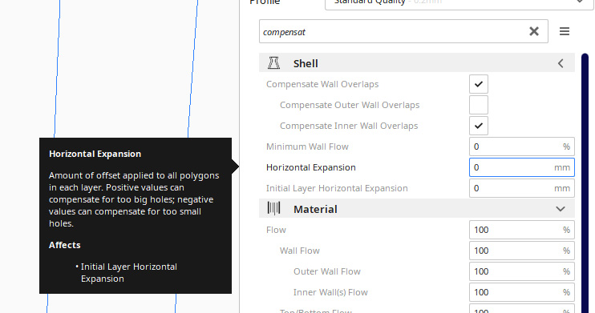Experimentation with these features would need to be undertaken to fully understand their advantages and disadvantages. For instance, increasing the X/Y measurements may fix the external dimensions but negatively impact the accuracy of printed holes.
Sometimes a machine can be upgraded to make it more accurate. For instance, I have a theory that using a belt pulley rather than a smooth surfaced bearing as a belt idler should have the belt ride the idler more consistently, due to the teeth of the belt deforming unevenly over the bearing surface:
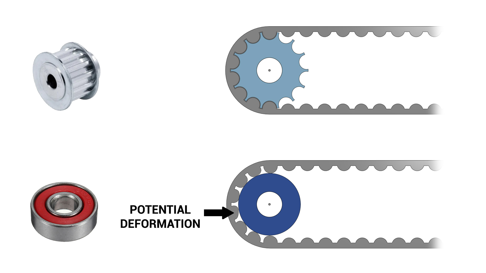One final measure, that is the least desirable, is to design parts to be printed bigger or smaller to compensate. This is a band aid approach and falls apart very quickly once we print geometry designed by other people.
Speed & Max Flow Tuning
Aim:
To find the maximum feedrate suitable for the outer walls, in terms of surface artefacts, flow rate and reliable extrusion.
When required:
This is an optional step, and only applies to specific scenarios. Examples include finding a safe feedrate for a difficult to extrude flexible filament, determing the maximum reliable feedrate when trying to print faster, and tuning outer wall speed to reduce 'noise' on external surfaces.
Tools:
Terminal software such as Pronterface or Octoprint.
Gcode generator on this page.
Instructions on how to setup terminal software can be found here.
The speed at which our 3D printer (or any CNC machine) moves is better described as 'feedrate'. Like any speed measurement, it is a calculation of distance travelled over time. In 3D printing, the most common feedrate units are mm/sec and mm/min.
Most of the time, we want to print as fast as possible, at least up to the point where print quality deteriorates beyond our personal threshold.
Surface artefacts related to feedrate
Some printers may have a combination of hardware and software that produces noise or surface artefacts with feedate as a factor. This is the case for the image submitted by midicdj1000, where a chnge in feedrate for the outer walls alters the pattern on this surface:
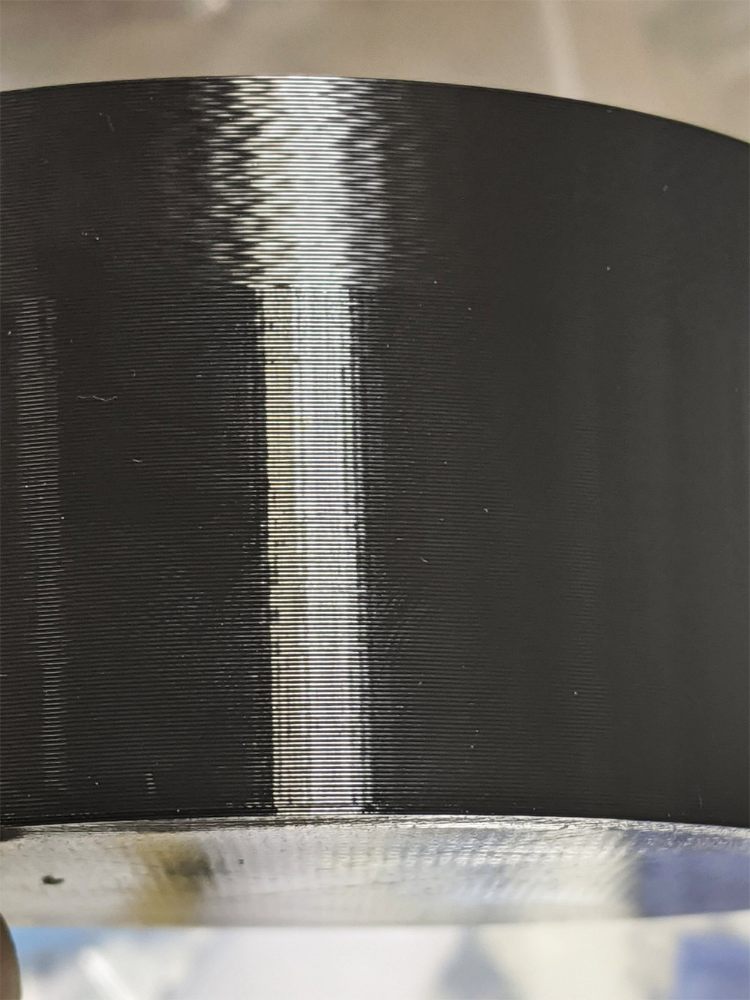The test on this page is therefore useful for finding an ideal feedrate for outer wall surface quality.
Feedrate limitations from the extruder drive and hot end
The tools on this tab will also allow you to calculate the maximum feedrate your 3D printer can move at and still maintain reliable extrusion. This relates to how quickly filament can be melted as it travels through the hot end. Once the filament cannot be melted sufficiently, it won't flow properly through the system and under extrusion or jams will occur.
Sometimes the ability of the heater is not the limiting factor, and instead the amount of grip and push from the extruder drive. Consider a flexible filament such as TPU. TPU doesn't need a particularly high temperature hot end to melt it properly, but many extruder drives struggle to grip and push the filament towards the hot end without it buckling and jamming. The test on this page can be used in these situations to find how fast you can print before the system breaks down.
Feedrate variations and modifiers in your slicer profile
It is important to understand how feedrate is handled by the slicer software. Slicers generally have a default/base feedrate that most speed calculations are based on. Features such as perimeters, external perimeters and solid infill are reduced in speed to aid visual print quality. Features such as internal infill are sped up because they will never be seen. The image below shows examples interfaces for this in several slicers:
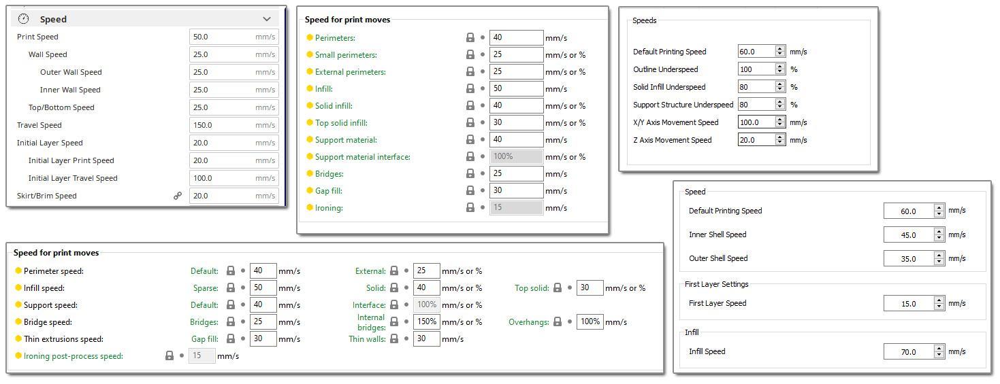Sometimes a person will claim they can print at a certain feedrate. This is often not the whole story, as their base feedrate might be what they are talking about, but much of the print will actually be completed at a slower speed. Add in slicer features like automatic slow down for layer cooling and firmware settings like acceleration, jerk and junction deviation and there is quite a bit of deviation.
The philosophy of this test - M220
This feedrate test tower is sliced in vase mode. This is for several reasons:
- After the first layer, a vase mode print only has a single type of feature: external perimeter. This makes it clear what the actual feedrate is for each segment of the tower.
- Vase mode prints have continuous extrusion after the sold base infill is completed and therefore don't require retraction. This means we will not be confused by artefacts introduced from retractions and layer changes.
- Vase mode prints don't have any travel moves after the solid bottom layers are complete. This means we can increase the print feedrate without worrying about the travel feedrate being proportionally increased to a dangerous value.
- Because of the above reasons, vase mode makes it ideal to use the M220 feedrate modifier gcode to alter the feedrate for each segment of the test. This is supported in Marlin, Klipper and RepRapFirmware. Changing your feedrate mid print from the printer's LCD controls or web inteface uses this feature of the firmware. This test will insert M220 commands into the gcode for speed changes on the fly.
M220 can be a double edge sword because it also affects the speed of retraction movements. If you are performing something like a retraction test, M220 is not suitable. In this case, however, due to the use of vase mode, M220 is a simple way for us to start with a slower feedrate and easily increase it throughout the print at set height intervals.
Maximum feedrate and acceleration limits in firmware
Every firmware has a safety feature to limit the feedrate and acceleration to user set maximums. This prevents a typo in the slicer or terminal command from producing a move so fast it damages the printer. Use the following instructions to check what feedrate/acceleration limits are in place for your firmware and temporarily raise them if necessary.
Please note that for this test, you would typically only alter feedrate limits. Acceleration limits are also covered here for completeness.
Marlin
Marlin limits the maximum feedrate with the M203 gcode.
You can enter M203 into a terminal and the maximum set feedrates will be reported.
If you wish to raise these limits, re-enter 203 and use the X and Y arguments to set the max feedrate, typically in mm/sec. eg:
M203 X500 Y500
where 500 is a feedrate of 500 mm/sec.
Marlin limits the acceleration with the M201 and M204 gcodes.
You can enter M503 into a terminal and these values will be reported.
M204 sets target acceleration for print, retraction and travel moves, however M201 values impose limits per axis. For example, if you set the M204 print acceleration to 1000 but the M201 Y acceleration limit is only 800, then the M204 P value will be capped at 800 for Y while printing. If you have a bed slinger with a heavy y axis, M201 can be used in this way to combat ringing.
If you wish this changes to be permanent, save to EEPROM with M500.
Klipper
Klipper limits the maximum feedrate in printer.cfgwith MAX_VELOCITY.
You can change this value and restart Klipper to raise it, or temporarily override it by entering:
SET_VELOCITY_LIMIT VELOCITY=500
in the terminal where 500 is a max feedrate of 500 mm/sec.
Klipper limits acceleration in printer.cfgwith MAX_ACCEL and MAX_ACCEL_TO_DECEL.
You can change these values and restart Klipper to raise them, or temporarily override by entering:
SET_VELOCITY_LIMIT ACCEL=600
or
SET_VELOCITY_LIMIT ACCEL_TO_DECEL=600
in the terminal where 600 is a max acceleration/accel to decel of 600 mm/sec/sec.
RepRapFirmware
RRF limits the maximum feedrate with the M203 gcode.
You can see your current value in config.g under M203.
If you wish to raise the limits, edit the X and Y arguments for M203 to set the max feedrate. eg:
M201 X3000 Y3000
Remember that RRF uses mm/min instead of mm/sec, so this example uses a value of 500 mm/sec. Convert from mm/sec to mm/min by multiplying by 60. When editing config.g, do not omit the arguments for Z and E. Only X and Y potentially need modifiying for this test so leave the values for Z and E untouched.
Later versions of RRF also use the I argument to set the minimum overall feedrate. It may be necessary to lower this value if you want a particularly slow feedrate for segments of the tuning tower.
RRF limits acceleration with the M201 and M204 gcodes.
You can see your current value in config.g under M201 and M204.
M204 sets target acceleration for print, and travel moves, however M201 values impose limits per axis. For example, if you set the M204 print acceleration to 1000 but the M201 Y acceleration limit is only 800, then the M204 P value will be capped at 800 for Y while printing. If you have a bed slinger with a heavy y axis, M201 can be used in this way to combat ringing.
For acceleration, RRF uses mm/sec, despite using mm/min for feedrate. When editing config.g for M201, be sure to include values for each axis (typically X, Y, Z and E). When editing config.g for M204, be sure to include values for both P and T.
Speed/feedrate/Max flow tuning tower generator
The STL for this test is available here: speedtower.stl
Interpreting Results:
Please use the following video as a guide to this test:
You may wish to stop the print early if it is clear extrusion has ceased or become unreliable. This may prevent the need for disassembly of the extruder to clear the blockage.
Some slicers support using the calculated volumetric flow rate above as a hard limit. For those that don't, you can use the following calculator to reverse engineer a maximum feedrat for your preferred extrusion width and layer height:
| Input setting: | |||||
|---|---|---|---|---|---|
| Quality > Line width | Extruder > Extrusion width | Print settings > Advanced > Extrusion width > Default extrusion width | Print settings > Width & Flow > Extrusion width > default | Template > Extruder > General > Extrusion width | |
| Taken from the form above after testing when extrusion breaks down | |||||
Your maximum reliable XY feedrate is 52.08 mm per second. |
|||||